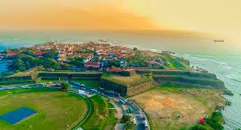

Galle Fort


Galle Fort, in the Bay of Galle on the southwest coast of Sri Lanka, was built first in 1588 by the Portuguese,
then extensively fortified by the Dutch during the 17th century from 1649 onwards.
It is a historical, archaeological and architectural heritage monument,
which even after more than 437 years maintains a polished appearance,
due to extensive reconstruction work done by the Archaeological Department of Sri Lanka.
The fort has a colourful history, and today has a multi-ethnic and multi-religious population.
The Sri Lankan government and many Dutch people who still own some of the properties inside the fort
are looking at making this one of the modern wonders of the world.
The heritage value of the fort has been recognized by the UNESCO and
the site has been inscribed as a cultural heritage UNESCO World Heritage Site under criteria iv,
for its unique exposition of "an urban ensemble which illustrates
the interaction of European architecture and South Asian traditions from the 16th to the 19th centuries.
The Galle Fort, also known as the Dutch Fort or the "Ramparts of Galle",
withstood the Boxing Day tsunami of 2004 which damaged part of coastal area Galle town. It has since been restored.
 Location (Galle Fort)